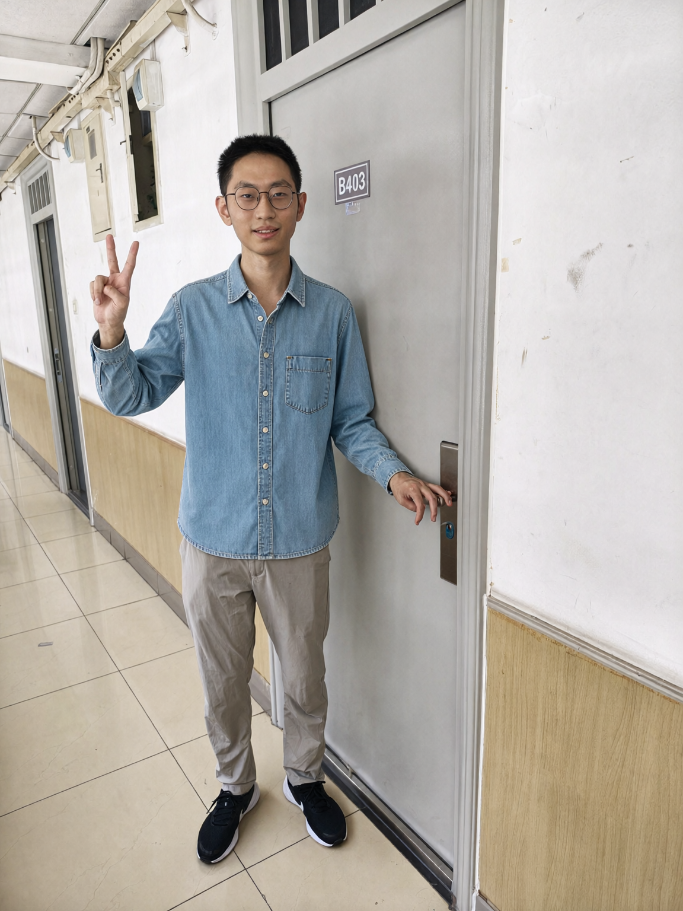
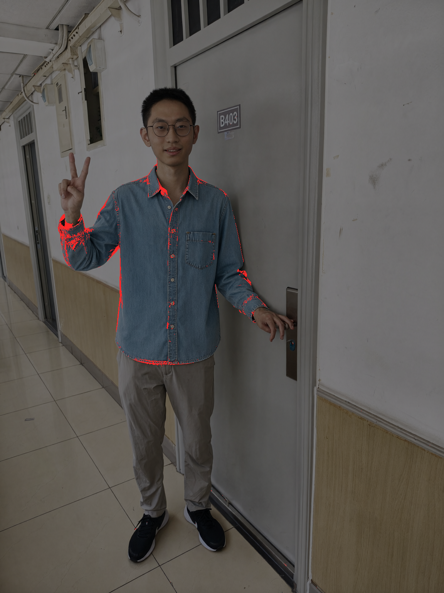
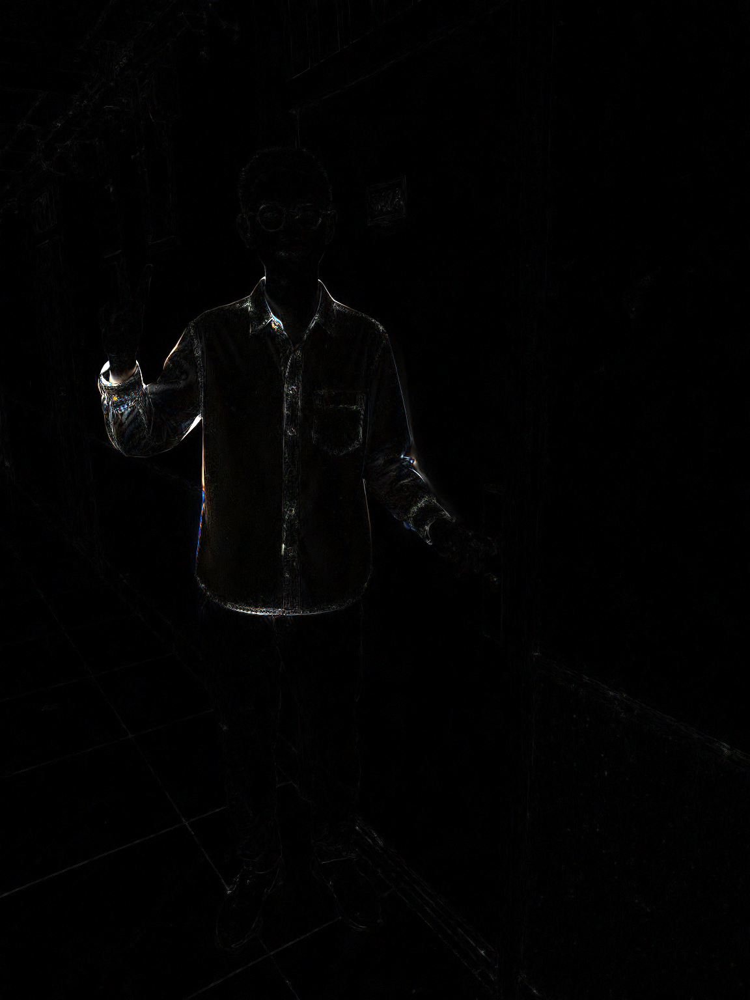
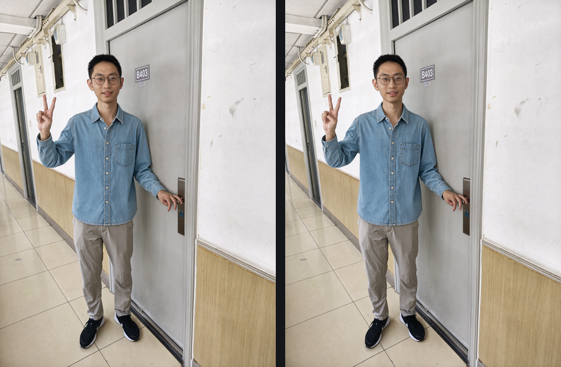
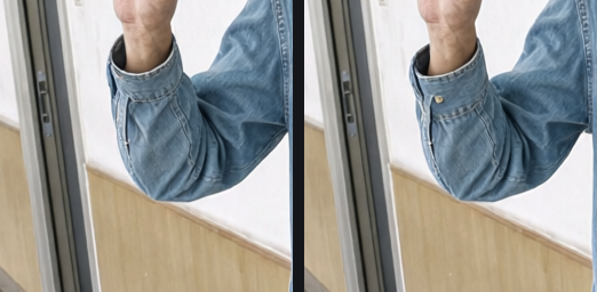

同一句指令、同一颗 seed：左边
A-fork
（图里现算条件），右边
B-llama
（llama.cpp 那份 115 行注进去）
条件本身：逐行余弦 0.98247 / 整体 0.98080 / 相对 L2 0.203。画出来：54.0% 的像素逐位不同， 但通道差过 16 的只占
0.385%
，平均 0.892/255，PSNR 38.19 dB。构图是量过没动的 （牛仔蓝掩膜质心两腿都是 (429,692)、包围盒高 1375 vs 1376）。看得出来的是抬起那只手的
袖口门襟上多了一颗金属扣
，以及衣纹与墙面污点各自重新长了一遍。
擦除对比
闪对比（0.5 秒一跳）
1:1 原尺寸看

A-fork：条件在图里现算（1K 那一发 73 秒口径）
B-llama：条件来自 llama.cpp（图里没有 CLIPLoader，那颗 8.9 GB 全程没进显存）
通道差 >16 标红、底图压暗（全图只有 0.385% 被标）

|a−b|×4，黑的地方完全没变


pair-fork-vs-llama.png · 缩略并排

hotspot-pair.png · 差异最密那块 2 倍（左 fork 右 llama）
where-changed.png · 大变化标红